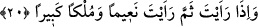

gökteki diğer yıldızlara üstünlüğü gibidir.” [222]
Hz. Ali ve Hasan Basrî (r.a.)’dan şöyle dedikleri rivâyet edilmiştir: Buradaki
gençler müslümanların küçükken ölen çocuklarıdır. Bunların ne sevapları ve ne de
günahları vardır.
Selman Fârisi de onların müşriklerin çocukları olup cennetliklerin hizmetçileri
olduklarını söylemiştir. Yine Hasan Basrî (rh.) şöyle demiştir: Bu gençlerin,
karşılığında mükâfât görecekleri iyilikleri veya cezâ görecekleri günahları yoktur. Onun
için bu makama konulmuşlardır.
Allah Teâlâ dünyada iken çok küçük olmaları dolayısıyla hizmet etmeye elverişli
olmayan kâfirlerin küçük çocuklarını öldükten sonra âhirette hizmete uygun hâle
getirmeğe kâmil kudreti ve mükemmel rahmeti ile kadirdir.
İmam Nevevi (rh.) der ki: Bu meselenin araştırmasını yapan âlimlerin kanâati âyette
söz edilen “vildan”ın cennet ehlinden olduklarıdır. Tıybî Şerhu’l-mişkât isimli eserde
şöyle diyor: Gılmân yâni cennet gençleri hakkında en uygun olanı, bu konuda herhangi
bir görüş belirtmemektir. Yâni biz, o gençlerin -bâzı âlimlerin kanâati doğrultusunda-
cennet ehlinden olduklarını söyleyemiyoruz. Yine biz, başka âlimlerin görüşü
doğrultusunda onların cehennemde babalarına tâbi olduklarını da söyleyemiyoruz. Şu
hâlde bu gençler hakkında üç görüş ileri sürülmüş olmaktadır.
et-Tevilâtü’n-necmiyye’de bu âyet-i kerîme şöyle yorumlanmaktadır: “Etraflarında
ölümsüz gençler dolaşır”: Yâni etraflarında zâtî tecellîler dolaşır. Bunlar, isim ve sıfat
küpeleriyle küpelenmişlerdir. “Sen onları gördüğün zaman saçılmış birer inci
zannedersin.” Yâni sen onları gördüğün zaman zât nurlarının şa’şaasından, sıfat ve isim
nurlarının parlaklığından onları etrafa saçılmış inciler zannedersin.
20. Ne yana bakarsan bak, (yığınla) nimet ve ulu bir saltanat görürsün.
“Orada” cennette “ne yana bakarsan bak,” gözün nereye değse nitelenemiyecek
derecede bol, “(yığınla) nimet ve ulu” büyük, geniş ve görkemli “bir saltanat
görürsün.”
Bir hadis-i şerifte şöyle buyrulmaktadır: “Cennetliklerin en alt mertebede olanı,
mülkünde bin yıllık yürüme mesâfesine bakandır. Ancak o, en uzak kısmını, en yakın
kısmını gördüğü gibi görür.”
Âyet-i kerîmedeki ifâdeleri, azdan çoğa doğru bir terakkî ve ta’mim olarak anlamak
gerekir. Bu şu demektir: Âhirette yukarda zikredilen mikdardan daha büyük ve üstün
başka şeyler de vardır.
Fusûl’da şöyle denilmektedir: “Naîm” bedenlerin râhatıdır, “mülk-i kebîr” ruhların
lezzetidir. Naîm cennetin sevk ve safâsı mülâhazasında, mülk-i kebîr ise dîdârın